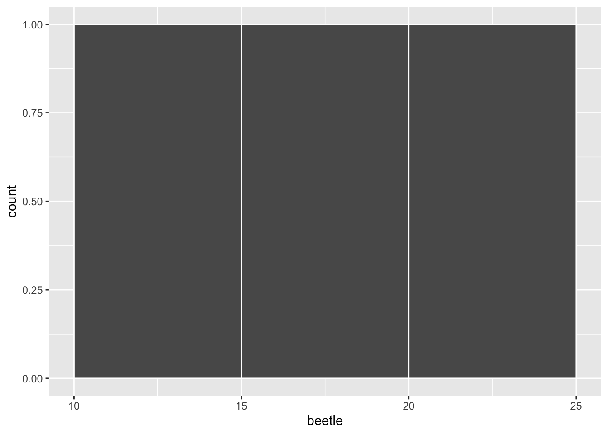
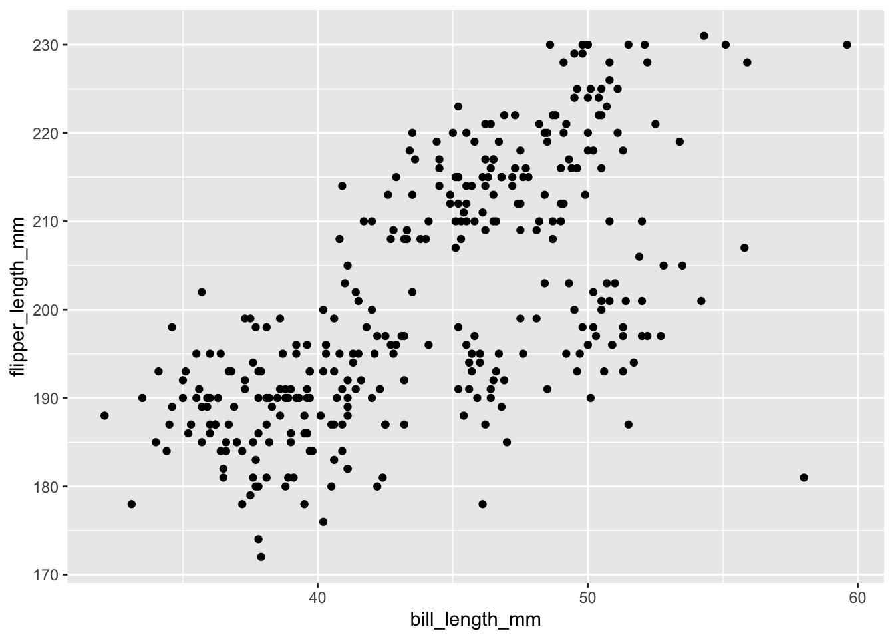
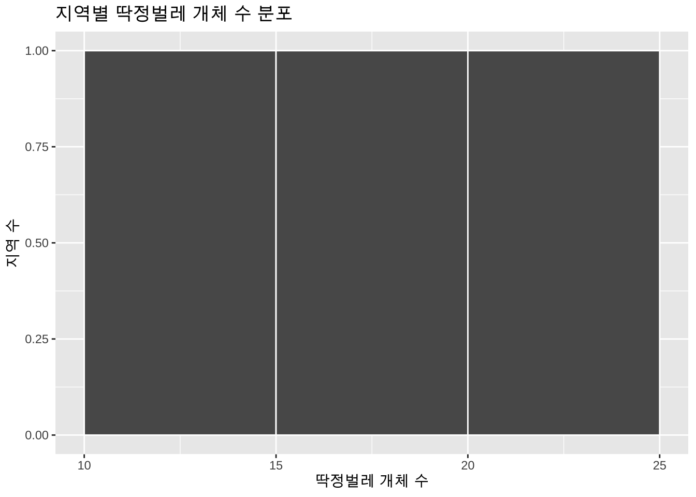

x <- 3
x[1] 3R은 데이터 분석과 그래픽 생성에 널리 사용되는 오픈 소스 프로그래밍 언어입니다. 다양한 학문 분야에 걸쳐 R은 표준 통계 소프트웨어로 자리 잡고 있으며 광범위한 온라인 커뮤니티를 자랑합니다. 따라서 R로 작업하면서 마주칠 수 있는 문제들에 대한 해결책은 빠른 웹 검색을 통해 쉽게 찾을 수 있습니다.
R을 다운로드하려면 CRAN 사이트로 이동하여 각자의 운영 체제(윈도우, 리눅스, macOS)에 맞는 올바른 버전을 선택해야 합니다. 그리고 Posit의 다운로드 페이지에서 RStudio와 같은 통합개발환경을 설치하면 더욱 편리하게 R을 사용할 수 있습니다. 가능하면 R을 쉽게 조작 및 확인할 수 있는 통합개발환경을 구축하는 데 시간을 아끼지 마시고, R 외에도 코드를 작성하고 편집하는 데 좋은 텍스트 편집기를 설치해 두시면 유용합니다.
R은 오픈 소스 소프트웨어이기 때문에 누구나 분석을 더 쉽게 할 수 있도록 사용자 정의 함수 패키지를 만들 수 있습니다. 이러한 패키지를 라이브러리(library)라고 하며 대부분 CRAN에 저장됩니다. 이러한 라이브러리는 R에서 다운로드하여 설치할 수 있으며 언제든지 호출하여 사용할 수 있습니다.
라이브러리를 설치하는 첫 번째 단계는 라이브러리를 다운로드하고 설치하는 것입니다. 예전에는 운영 체제 메뉴에서 패키지를 설치하는 절차를 길게 따라가는 방식이 흔했습니다. 우리는 동일한 분석 환경을 다시 만들 수 있도록 패키지 설치와 로드를 코드로 남기는 방식을 우선합니다. 시스템 라이브러리에 설치 권한이 없을 때만 관리자 권한 실행이 필요합니다. 그 외에는 보통은 사용자 라이브러리에 설치하면 충분합니다.
일반적인 패키지 설치 방법은 R-Studio의 상단 메뉴의 “Packages” 탭을 클릭하고 드롭다운 메뉴에서 “Install Packages”를 선택합니다. 라이브러리 설치시 CRAN 미러(mirror)를 선택해야 하는데, 기본적으로 이것은 지속적으로 업데이트되는 CRAN의 어떤 저장된 버전을 사용할지 정의하는 것입니다. CRAN 미러 선택은 대개 패키지 설치에 아무런 영향을 미치지 않습니다.
이 작업이 끝나면 R에서 사용할 수 있는 라이브러리의 전체 알파벳순 목록이 표시됩니다. 아래로 스크롤하여 MASS를 선택하고 확인을 클릭합니다. 패키지가 설치되며 사용자가 필요할 때마다 호출할 수 있습니다.
하지만 R-Studio가 아닌 positron, vscode 사용자는 메뉴 대신 패키지 설치 명령어를 사용해야 합니다. R에서 명령어를 사용해서 설치하기 위해선 install.packages() 명령어를 사용합니다. 예를 들어 MASS 라이브러리를 설치하려면 다음 코드를 사용합니다.
install.packages("MASS")라이브러리를 호출하여 R에서 사용하려면 library() 명령어를 사용합니다. 예를 들어 MASS 라이브러리를 호출하려면 다음 코드를 사용합니다.
library(MASS)코드에 오류가 없는 한 R은 빈 줄만 표시하며, 그 후 라이브러리에 저장된 모든 함수나 데이터셋을 사용할 수 있습니다.
R은 객체를 기반으로 작동하며 객체의 종류는 다양합니다. 객체는 데이터를 저장하고 객체에 대해 연산을 수행할 수 있는 명령어들을 가지고 있습니다. 객체에 값을 부여하려면 화살표(<-) 또는 등호를 사용합니다. 통상적으로 R에서는 화살표(<-)가 더 널리 쓰이며, 이를 사용하는 것을 권장해 드립니다.
x <- 3
x[1] 3산술 연산자는 더하기(+), 빼기(-), 곱하기(*), 나누기(/), 지수(^)에 대해 표준 기호를 사용합니다. R은 수학 시간에 배운 표준 연산 순서를 따르며, 괄호를 먼저 계산하고 그 다음은 지수, 이어서 곱셈과 나눗셈을 계산합니다.
x <- 2 * (1 + 2)
x[1] 6위 식은 6을 반환합니다. 항상 괄호를 사용하여 연산 순서를 강제할 수 있지만 여는 괄호마다 닫는 괄호가 반드시 필요합니다. 여는 괄호에 맞는 닫는 괄호가 없으면 R은 답을 반환하지 않고 오류 또는 입력을 기다리는 상태가 될 것입니다.
주석은 파운드 기호(#)로 시작하며 해당 줄에서 파운드 기호 뒤에 오는 내용은 실행되지 않습니다. 코드의 가독성을 높이기 위해 공백과 주석을 적절히 포함시켜 주십시오.
x <- 2 * 5 # 이 줄의 모든 내용은 10을 계산합니다.
x[1] 10R에서 변수 이름은 대소문자를 구분한다는 점을 주의하십시오. x와 X는 서로 다른 두 개의 변수입니다. 또한 변수 이름은 숫자나 언더바로 연결할 수 있지만 공백이나 쉼표와 같은 특수 문자는 허용되지 않습니다. 변수 이름에 대한 일관된 규칙을 정하고 객체에 명확한 이름을 부여하는 것이 코드를 이해하고 디버깅하는 데 큰 도움이 됩니다.
함수는 두 번째 유형의 객체이며 R은 풍부한 내장 함수 집합을 제공합니다. 함수는 괄호 안에 인자를 넣어 호출되며 일반적으로 값을 반환합니다. 예를 들어 여러 값 중 최댓값을 구하려면 max() 함수를 사용합니다.
max(9, 5)[1] 9어떤 함수들은 인자가 필요하지 않지만 여전히 괄호는 포함되어야 합니다. 예를 들어 현재 작업 공간에 생성된 모든 R 객체를 표시하는 데 사용되는 objects() 함수는 다음과 같이 호출됩니다.
objects()[1] "x"함수를 호출할 때 결과를 객체에 할당하지 않으면 반환된 값이 화면에 표시됩니다. 결과를 객체에 할당하면 해당 값이 저장되지만 화면에 바로 표시되지는 않습니다.
my_max <- max(9, 5)
my_max[1] 9함수의 도움말을 얻으려면 help() 함수를 사용하거나 물음표(?) 연산자를 함수의 이름과 함께 사용하십시오. 도움말 페이지는 함수가 어떻게 동작하는지 배경 지식과 예제들을 보여주므로 적극 활용해 주십시오. 인자는 함수에 이름으로 할당하거나 위치로 할당할 수 있습니다. 이름으로 할당하면 순서에 관계없이 나열할 수 있고 코드가 더 명확해집니다.
R에는 많은 종류의 데이터 구조가 있습니다. 데이터를 효과적으로 다루기 위해서는 기본이 되는 데이터 구조들을 잘 이해해야 합니다.
단순한 형태의 데이터는 단일 숫자형 데이터 또는 문자형 데이터입니다. 숫자형 데이터는 수리적 연산이 가능하며, 문자형 데이터는 문자와 숫자의 문자열로 이루어져 있습니다. R이 문자열을 인식하게 하려면 반드시 따옴표를 사용하여 입력해야 합니다.
name <- "Stephen Loftus"
height <- 71변수는 단일 값 그 이상일 수 있습니다. 동일한 유형의 값(숫자, 문자, 논리값)이 연속적으로 모인 구조를 벡터(vector)라고 부릅니다. 벡터는 c() 함수를 사용하여 쉽게 생성할 수 있습니다.
height <- c(75, 74, 67, 83, 75)
height[1] 75 74 67 83 75연속적인 정수의 시계열을 생성하려면 콜론(:) 연산자를 사용할 수 있습니다.
y <- 3:10
y[1] 3 4 5 6 7 8 9 10벡터의 개별 요소는 대괄호 안에 인덱스를 지정하여 검색할 수 있으며, R은 첫 번째 요소에 대해 1부터 시작합니다.
height[3][1] 67인덱스가 벡터인 경우에는 해당 벡터의 인덱스가 가리키는 요소들을 반환합니다.
height[c(1, 3, 5)][1] 75 67 75R은 벡터화된 연산을 지원하므로 반복문 없이 벡터 전체에 대해 수학 연산을 수행할 수 있습니다. 벡터의 요소 개수를 알고 싶다면 length() 함수를 사용하십시오. 동일한 벡터에 숫자형과 문자형 값을 혼합할 수 없다는 점을 유의해 주십시오. 혼합할 경우 R은 모든 숫자형 값을 문자로 변경합니다.
팩터(factor)는 벡터와 유사하지만 고정된 수의 레벨 범주를 가지는 범주형 변수에 주로 사용됩니다. 예를 들어 서식지 유형을 나타내는 일련의 사이트가 있다면 이를 벡터가 아닌 팩터로 저장하십시오.
habitats <- factor(c("marsh", "grassland", "forest", "tundra", "grassland"))
habitats[1] marsh grassland forest tundra grassland
Levels: forest grassland marsh tundra데이터가 팩터로 저장되면 R 내부적으로는 숫자로 저장되므로 계산을 범주별로 수행할 때 효율적입니다.
리스트는 일련의 값을 포함하지만 리스트의 값은 서로 다른 유형일 수 있다는 점에서 벡터와 다릅니다. 예를 들어 지역의 이름, 데이터의 개수, 논리값 등을 하나에 담을 수 있습니다. 리스트는 list() 함수로 만들어집니다.
my_list <- list("Wyoming", 42, TRUE)
my_list[[1]]
[1] "Wyoming"
[[2]]
[1] 42
[[3]]
[1] TRUE리스트의 요소는 이중 대괄호를 사용하여 접근합니다.
my_list[[1]][1] "Wyoming"행렬은 동일한 유형의 값으로 구성된 여러 개의 행과 열을 가집니다. 행렬은 matrix() 함수로 쉽게 생성할 수 있으며 행과 열의 수를 지정할 수 있습니다. 기본적으로 행렬은 열 방향으로 먼저 채워집니다.
x <- matrix(c(3, 1, 4, 2, 5, 8), nrow = 3)
x [,1] [,2]
[1,] 3 2
[2,] 1 5
[3,] 4 8행렬의 요소는 행과 열의 위치를 대괄호 안에 적어 검색합니다. 행이 먼저이고 열이 두 번째라는 순서를 기억해 주십시오. 세 번째 행과 두 번째 열의 값은 다음과 같이 찾습니다.
x[3, 2][1] 8R에서 데이터를 받는 일반적인 방법은 데이터 프레임입니다. 데이터 프레임은 행렬과 같지만 열들이 서로 다른 유형일 수 있습니다. 각 행은 연구의 한 관측치에 대한 값을 제공하고, 각 열은 한 변수에 대한 값을 제공합니다. 벡터들을 결합하여 데이터 프레임을 만들 수 있습니다.
locality <- c("Athens", "Comer", "Whitehall")
beetle <- c(14, 23, 16)
is_old_growth <- c(TRUE, TRUE, FALSE)
forests <- data.frame(locality, beetle, is_old_growth)특정 변수에 접근하려면 달러 기호 연산자를 사용합니다.
forests$locality[1] "Athens" "Comer" "Whitehall"데이터 프레임이나 행렬 등을 R에 로드하거나 생성한 뒤, 객체가 올바른지 검증하기 위해 객체를 검사해야 합니다. 다음과 같은 함수들이 유용합니다.
class() 함수는 객체가 벡터인지 데이터 프레임인지 등을 확인head() 및 tail() 함수는 처음 또는 마지막 몇 개의 값을 표시str() 함수는 객체의 내부 구조, 행과 열의 수, 각 변수의 유형과 값을 알려주는 유용한 함수 중 하나summary() 함수는 객체에 대한 최솟값, 중간값, 평균 등의 기본적인 통계적 정보를 제공대규모 데이터 세트의 경우 엑셀과 같은 스프레드시트에서 데이터를 입력하고 쉼표로 구분된 텍스트 형식으로 내보내기하여 R로 가져오는 것이 좋습니다.
현재 작업 위치를 확인하려면 getwd()를 사용할 수 있습니다. 다만 재현 가능한 분석에서는 setwd()를 반복하기보다 프로젝트 폴더와 상대 경로를 사용하는 편이 안전합니다.
getwd()
# 프로젝트 폴더를 기준으로 상대 경로를 사용합니다.
# setwd()를 반복해서 호출하기보다 RStudio/Positron 프로젝트를 사용해 보십시오.데이터 프레임 형식으로 파일의 값을 읽어오려면 기본 R의 read.table() 또는 read.csv()도 사용할 수 있지만, tidyverse 작업에서는 readr::read_csv()를 우선 사용하겠습니다. 파일에 변수 이름이 헤더로 포함되어 있는지, 각 값들을 분리하는 기호가 무엇인지 확인하는 습관은 그대로 중요합니다.
# 패키지 설치
# install.packages("tidyverse")
# 패키지 불러오기
library(tidyverse)── Attaching core tidyverse packages ──────────────────────── tidyverse 2.0.0 ──
✔ dplyr 1.2.1 ✔ readr 2.2.0
✔ forcats 1.0.1 ✔ stringr 1.6.0
✔ ggplot2 4.0.3 ✔ tibble 3.3.1
✔ lubridate 1.9.5 ✔ tidyr 1.3.2
✔ purrr 1.2.2
── Conflicts ────────────────────────────────────────── tidyverse_conflicts() ──
✖ dplyr::filter() masks stats::filter()
✖ dplyr::lag() masks stats::lag()
ℹ Use the conflicted package (<http://conflicted.r-lib.org/>) to force all conflicts to become errorsmy_data <- readr::read_csv("data/penguins.csv", show_col_types = FALSE)
my_data# A tibble: 344 × 7
species island bill_length_mm bill_depth_mm flipper_length_mm body_mass_g
<chr> <chr> <dbl> <dbl> <dbl> <dbl>
1 Adelie Torgersen 39.1 18.7 181 3750
2 Adelie Torgersen 39.5 17.4 186 3800
3 Adelie Torgersen 40.3 18 195 3250
4 Adelie Torgersen NA NA NA NA
5 Adelie Torgersen 36.7 19.3 193 3450
6 Adelie Torgersen 39.3 20.6 190 3650
7 Adelie Torgersen 38.9 17.8 181 3625
8 Adelie Torgersen 39.2 19.6 195 4675
9 Adelie Torgersen 34.1 18.1 193 3475
10 Adelie Torgersen 42 20.2 190 4250
# ℹ 334 more rows
# ℹ 1 more variable: sex <chr>R은 다양한 형태의 기술 통계를 계산하기 위한 함수들을 포함하고 있습니다. 다음과 같은 함수들을 사용하여 데이터를 요약해 볼 수 있습니다.
mean(): 산술 평균median(): 중앙값sd(): 표준 편차var(): 분산range(): 최솟값, 최댓값mean(forests$beetle)[1] 17.66667sd(forests$beetle)[1] 4.725816R은 뛰어난 플롯 생성 기능을 가지고 있습니다. 복잡한 플롯도 생성할 수 있으며 시각화를 통해 데이터를 직관적으로 파악할 수 있습니다. 기본적인 도수 분포를 그릴 때는 hist() 함수를 사용합니다.
forests |>
ggplot2::ggplot(ggplot2::aes(x = beetle)) +
ggplot2::geom_histogram(binwidth = 5, boundary = 0, color = "white")
산점도는 수평 축(x축)과 수직 축(y축)의 데이터를 넣어 plot() 함수로 생성합니다.
tibble::tibble(bill_length_mm = my_data$bill_length_mm, flipper_length_mm = my_data$flipper_length_mm) |>
ggplot2::ggplot(ggplot2::aes(x = bill_length_mm, y = flipper_length_mm)) +
ggplot2::geom_point()Warning: Removed 2 rows containing missing values or values outside the scale range
(`geom_point()`).
또한 xlab, ylab, main 매개변수를 사용하여 축 레이블과 제목을 설정할 수 있고, col 매개변수를 사용하여 색상을 변경할 수 있습니다. 여러분이 만든 멋진 그래픽은 pdf() 함수 등을 활용해 내보내기 할 수 있습니다.
미국 영화 연구소(American Film Institute)의 2007년 명단 중 상위 5개 영화에 대한 다음 속성 집합을 고려해 보십시오.
Citizen Kane, The Godfather, Casablanca, Raging Bull, Singing in the Rain이라는 값을 가진 Movie라는 이름의 벡터를 생성하기 위해 어떤 코드를 사용하면 좋을까요?
문제 1의 영화가 제작된 연도를 나타내는, 1941, 1972, 1942, 1980, 1952라는 값을 가진 Year라는 이름의 벡터를 생성하기 위해 어떤 코드를 사용하면 좋을까요?
문제 1의 영화 상영 시간(분 단위)을 나타내는, 119, 177, 102, 129, 103이라는 값을 가진 RunTime이라는 이름의 벡터를 생성하기 위해 어떤 코드를 사용하면 좋을까요?
영화의 상영 시간을 시간 단위로 구하고 이를 RunTimeHours라는 벡터에 저장하기 위해 어떤 코드를 사용하면 좋을까요?
문제 1, 2, 3에서 생성된 벡터들을 결합하여 MovieInfo라는 이름의 데이터 프레임을 생성하기 위해 어떤 코드를 사용하면 좋을까요?
조지 루카스(George Lucas)의 초기 비디오 게임 회사인 루카스아츠(LucasArts)의 비디오 게임 시리즈에 대한 다음 질문에 답해 보십시오.
The Secret of Monkey Island, Indiana Jones and the Fate of Atlantis, Day of the Tentacle, Grim Fandango라는 값을 가진 Title이라는 이름의 벡터를 생성해 보십시오.
문제 1의 게임이 출시된 연도를 나타내는 1990, 1992, 1993, 1998이라는 값을 가진 Release라는 이름의 벡터를 생성해 보십시오.
루카스아츠는 1982년에 설립되었습니다. 회사 설립 후 몇 년 뒤에 각 게임이 출시되었는지 계산하기 위해 어떤 코드를 사용하면 좋을까요?
앞서 언급한 게임들의 순위를 나타내는 14, 11, 6, 1이라는 값을 가진 Rank라는 이름의 벡터를 생성해 보십시오.
문제 1, 2, 4에 포함된 벡터들로 AdventureGames라는 데이터 프레임을 생성해 보십시오.
앞서 학습한 객체 검사, 기초 통계 및 시각화에 대한 다음 질문에 답해 보십시오.
앞서 만든 MovieInfo 데이터 프레임의 구조를 살펴보고 변수들의 유형을 확인하기 위해 어떤 함수를 호출해야 할까요?
앞에서 정의한 RunTime 벡터를 활용하여, 해당 영화들의 평균 상영 시간과 상영 시간의 표준 편차를 계산하기 위한 코드를 작성해 보십시오.
R에서 기본 제공되는 1부터 10까지의 숫자형 벡터 num_vec을 만든 뒤, 이 벡터를 활용해 2행 5열의 행렬을 생성하는 코드를 작성해 보십시오.
여러분의 작업 디렉터리를 확인하고, 그 경로를 my_data_folder라는 하위 폴더로 변경하는 명령어를 작성해 보십시오.
앞에서 만든 RunTime 벡터를 바탕으로, 상영 시간에 대한 기초적인 히스토그램을 생성하고 그래프의 메인 제목을 “영화 상영 시간 분포”로 설정해 보십시오.
이 책은 R 4.6.0(2026년 4월 24일 공개)을 기준으로 작성되었습니다. 새 학습 환경에서는 현재 CRAN 배포판의 R 버전을 설치하고, 수업 노트에는 실행한 R 버전과 패키지 버전을 남겨 재현성을 높이는 것이 좋습니다. R Project의 공식 안내는 R Project 및 CRAN에서 확인하실 수 있습니다.
현대적인 R 분석에서는 작업 디렉터리를 손으로 자주 바꾸기보다, 프로젝트 폴더를 하나 정하고 그 안에서 데이터, 코드, 그림을 상대 경로로 관리합니다. 예를 들어 data/my_data.csv와 같이 프로젝트 내부 경로를 사용하면 다른 컴퓨터에서도 같은 구조를 유지하기 쉽습니다. 또한 R 4.1 이후 사용할 수 있는 기본 파이프 |>는 계산의 흐름을 왼쪽에서 오른쪽으로 읽게 해 주므로, 여러 함수를 이어 쓰는 분석에서 가독성을 높입니다.
install.packages("tidyverse")The following package(s) will be installed:
- tidyverse [2.0.0]
These packages will be installed into "~/Works/practice-statistics/renv/library/macos/R-4.6/aarch64-apple-darwin25.4.0".
# Installing packages --------------------------------------------------------
[32m✔[0m tidyverse 2.0.0 [linked from cache]
Successfully installed 1 package in 1.5 milliseconds.library(tidyverse)
R.version.string[1] "R version 4.6.1 (2026-06-24)"sessionInfo()R version 4.6.1 (2026-06-24)
Platform: aarch64-apple-darwin25.4.0
Running under: macOS Tahoe 26.5.2
Matrix products: default
BLAS: /opt/homebrew/Cellar/openblas/0.3.34/lib/libopenblasp-r0.3.34.dylib
LAPACK: /opt/homebrew/Cellar/r/4.6.1/lib/R/lib/libRlapack.dylib; LAPACK version 3.12.1
locale:
[1] C.UTF-8/C.UTF-8/C.UTF-8/C/C.UTF-8/C.UTF-8
time zone: Asia/Seoul
tzcode source: internal
attached base packages:
[1] stats graphics grDevices datasets utils methods base
other attached packages:
[1] lubridate_1.9.5 forcats_1.0.1 stringr_1.6.0 dplyr_1.2.1
[5] purrr_1.2.2 readr_2.2.0 tidyr_1.3.2 tibble_3.3.1
[9] ggplot2_4.0.3 tidyverse_2.0.0
loaded via a namespace (and not attached):
[1] bit_4.6.0 gtable_0.3.6 jsonlite_2.0.0 crayon_1.5.3
[5] compiler_4.6.1 renv_1.2.3 tidyselect_1.2.1 parallel_4.6.1
[9] scales_1.4.0 yaml_2.3.12 fastmap_1.2.0 R6_2.6.1
[13] labeling_0.4.3 generics_0.1.4 knitr_1.51 pillar_1.11.1
[17] RColorBrewer_1.1-3 tzdb_0.5.0 rlang_1.3.0 utf8_1.2.6
[21] stringi_1.8.7 xfun_0.60 S7_0.2.2 bit64_4.8.2
[25] otel_0.2.0 timechange_0.4.0 cli_3.6.6 withr_3.0.3
[29] magrittr_2.0.5 digest_0.6.39 grid_4.6.1 vroom_1.7.1
[33] hms_1.1.4 lifecycle_1.0.5 vctrs_0.7.3 evaluate_1.0.5
[37] glue_1.8.1 farver_2.1.2 rmarkdown_2.31 tools_4.6.1
[41] pkgconfig_2.0.3 htmltools_0.5.9 tidyverse는 readr, dplyr, ggplot2, tibble, tidyr 등 데이터 분석에서 자주 쓰는 패키지를 함께 불러옵니다. 이 책에서는 통계학의 원리를 설명할 때 기본 R 함수를 계속 사용하지만, 데이터 불러오기, 표 형태 요약, 그래프 작성에서는 tidyverse 문법도 함께 소개합니다. 예를 들어 벡터를 각각 만든 뒤 data.frame()으로 묶는 대신, 열 이름과 값을 한 번에 드러내는 tibble()을 사용할 수 있습니다.
movie_info <- tibble(
movie = c("Citizen Kane", "The Godfather", "Casablanca"),
year = c(1941, 1972, 1942),
runtime = c(119, 177, 102)
) |>
mutate(runtime_hours = runtime / 60)
movie_info# A tibble: 3 × 4
movie year runtime runtime_hours
<chr> <dbl> <dbl> <dbl>
1 Citizen Kane 1941 119 1.98
2 The Godfather 1972 177 2.95
3 Casablanca 1942 102 1.7 시각화도 같은 원칙을 따릅니다. hist()와 plot()은 R 기본 그래픽의 작동 방식을 이해하는 데 유용하지만, 보고서와 수업 자료에서는 ggplot2가 더 일관된 문법을 제공합니다.
forests |>
ggplot2::ggplot(ggplot2::aes(x = beetle)) +
ggplot2::geom_histogram(binwidth = 5, boundary = 0, color = "white") +
labs(
x = "딱정벌레 개체 수",
y = "지역 수",
title = "지역별 딱정벌레 개체 수 분포"
)
이 예제에서 중요한 것은 새 도구 자체가 아니라 사고방식입니다. 데이터를 표로 만들고, 열 이름을 의미 있게 정하고, 변환 과정을 코드로 남기고, 그래프의 축과 제목을 해석 가능한 언어로 쓰는 습관이 이후 장의 통계적 추론을 지탱합니다.
R은 문자형 데이터부터 숫자형 데이터까지 폭넓게 다룰 수 있는 유연성을 제공합니다. 벡터, 팩터, 리스트, 행렬, 그리고 데이터 프레임과 같은 다양한 객체 구조를 적재적소에 활용하면 복잡한 데이터 분석을 손쉽게 해낼 수 있습니다. 통계 분석의 토대가 되는 기초 함수들과 시각화 도구들은 데이터의 숨겨진 패턴을 찾는 데 핵심적인 역할을 합니다. 우리의 다음 목표는 이처럼 구축된 데이터를 기반으로, 특정 조건에 부합하는 데이터의 일부를 자유자재로 추출하고 이를 심화 분석에 활용하는 방법을 익히는 것입니다.